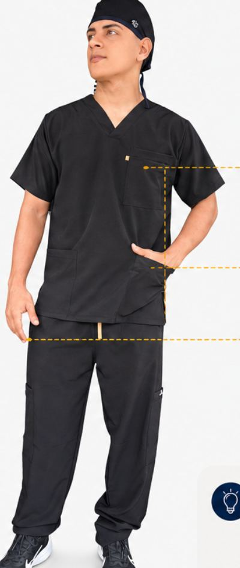
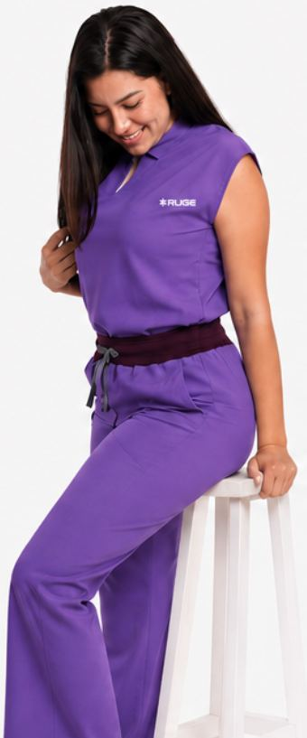

Guía de medidas
Guía general
Elige tu talla ideal según tus medidas. Así te aseguramos comodidad, estilo y el mejor fit.
¿Cómo tomar tus medidas?
- PechoMide alrededor de la parte más amplia de tu pecho, manteniendo la cinta horizontal.
- Largo de camisaMide desde el punto más alto del hombro hasta la cadera.
- Cadera (pantalón)Mide alrededor de la parte más amplia de tu cadera.
| Talla | S | M | L | XL |
|---|---|---|---|---|
| Pecho (cm) | 108 cm | 114 cm | 115 cm | 121 cm |
| Largo de camisa (cm) | 71 cm | 73 cm | 75 cm | 79 cm |
| Talla | S | M | XL |
|---|---|---|---|
| Largo (cm) | 102 cm | 103 cm | 112 cm |
| Cadera (cm) | 110 cm | 127 cm | 135 cm |
Consejo: si estás entre dos tallas, te recomendamos elegir la más grande para mayor comodidad.

Modelo Mercy / Bella Fit
Las medidas pueden variar ligeramente según el modelo (Mercy o Bella Fit) y el proceso de confección.
| Medida | XXS | XS | S | M | L | XL |
|---|---|---|---|---|---|---|
| Espalda | 32 | 34 | 36 | 38 | 40 | 42 |
| Largo delantero | 60 | 62 | 64 | 67 | 69 | 71 |
| Busto (contorno) | 88 | 96 | 100 | 108 | 116* | 124 |
| Cintura (contorno) | 64 | 72 | 76 | 88 | 100 | 112 |
| Cadera (contorno) | 94 | 98 | 104 | 116 | 120 | 128 |
| Sisa | 16 | 18 | 20 | 21 | 22 | 23 |
| Manga (ancho x largo) | 16 x 30 | 18 x 32 | 19 x 34 | 20 x 36 | 22 x 40 | 23 x 42 |
* En la foto de la talla L aparece 29 como medida plana; el contorno corresponde aproximadamente a 116 cm.
| Medida | XXS | XS | S | M | L | XL |
|---|---|---|---|---|---|---|
| Largo total | 102 | 102 | 103 | 104 | 105 | 106 |
| Cadera (contorno) | 94 | 100 | 102 | 110 | 120 | 130 |
| Cintura (contorno) | 64 | 90 | 90 | 100 | 110 | 120 |
Observaciones de confección: dejar 4 cm de costura exterior y 3 cm de basta para futuros ajustes.
Nota técnica: las medidas indicadas son referenciales y pueden variar ligeramente según el modelo (Mercy o Bella Fit), el patronaje y el proceso de confección. Se recomienda utilizar la ficha técnica específica de cada modelo para producción.

Mandil médico mujer
Encuentra tu talla según tus medidas de busto, cintura, cadera y largo de manga.
- BustoMide la parte más amplia de tu busto.
- CinturaMide la parte más estrecha de tu cintura.
- CaderaMide la parte más amplia de tu cadera.
- Largo de mangaMide desde el hombro hasta la muñeca.
| Talla | Busto | Cintura | Cadera | Largo del mandil | Largo de manga |
|---|---|---|---|---|---|
| XS | 88 cm | 93 cm | 92 cm | 85 cm | 60 cm |
| S | 94 cm | 94 cm | 98 cm | 88 cm | 62 cm |
| M | 103 cm | 100 cm | 104 cm | 92 cm | 64 cm |
| L | 108 cm | 108 cm | 113 cm | 96 cm | 66 cm |
| XL | 116 cm | 119 cm | 118 cm | 100 cm | 68 cm |
Recomendación: si tus medidas están entre dos tallas, te recomendamos elegir la talla más grande para mayor comodidad.
Mandil médico hombre
Encuentra tu talla según tus medidas de pecho, cadera y largo de manga.
- PechoMide la parte más amplia de tu pecho.
- CaderaMide la parte más amplia de tu cadera.
- Largo de mangaMide desde el hombro hasta la muñeca.
| Talla | Pecho | Cadera | Largo del mandil | Largo de manga |
|---|---|---|---|---|
| XS | 108 cm | 110 cm | 95 cm | 65 cm |
| S | 113 cm | 120 cm | 98 cm | 67 cm |
| M | 118 cm | 127 cm | 101 cm | 69 cm |
| L | 123 cm | 131 cm | 104 cm | 71 cm |
| XL | 128 cm | 135 cm | 107 cm | 73 cm |
Recomendación: si tus medidas están entre dos tallas, te recomendamos elegir la talla más grande para mayor comodidad.
¿Dudas con tu talla? Te ayudamos.
Consultar por WhatsApp